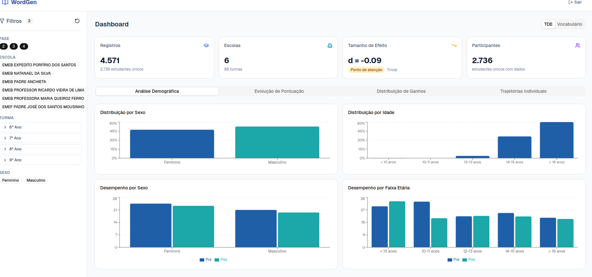

Resumo Profissional
Professor na Universidade Federal do Pará (UFPA) com experiência em Inteligência Artificial, Aprendizado de Máquina, Big Data, visualização da informação e Processamento de Linguagem Natural. Cientista de dados e desenvolvedor de software com experiência em Python. Atua em projetos com LangChain, OCR, análise de dados psicofisiológicos e sistemas de busca semântica.
Educação
-
Doutorado em Ciência da Computação
Universidade de Brasília (UnB), 2015-2022
Enfoque em IA, PLN e Sistemas Interativos.
-
Mestrado em Tecnologia da Informação
Universidade Federal do Pará (UFPA), 2010-2012
Pesquisa em sistemas inteligentes e acessibilidade.
-
Bacharelado em Sistemas de Informação
Universidade Federal do Pará (UFPA), 2005-2009
-
Licenciatura em Física
Centro Federal de Educação Tecnológica (CEFET-PA), 2005-2008
Pesquisas em sensoriamento remoto.
Experiência Profissional
Professor Associado I
UFPA - Universidade Federal do Pará, Cametá, PA (2012 - Atual)
Diretor da Faculdade de Sistemas de Informação. Atua com ensino, pesquisa e extensão nas áreas de IA, computação aplicada, educação assistida por tecnologia e LaTeX.
Arquiteto de Soluções
NEES - Núcleo de Excelência em Tecnologias Sociais (Atual)
Arquitetura de soluções digitais orientadas a impacto social, com integração de IA, automação e plataformas conversacionais.
Desenvolvedor Backend
Autônomo, Belém, PA (2012 - Atual)
Desenvolvimento backend em Python, APIs REST (FastAPI, Flask), bancos de dados (PostgreSQL, pgvector), LangChain, LLMs, OCR, NLP.
Sócio Fundador
Flow Design Consultancy (2022 - atual)
Atuação como fundador com foco em design estratégico e soluções baseadas em tecnologia. Local: Brasília, DF.
Projetos Profissionais
FasiTech - Sistema de Gestão Acadêmica com IA e Automação
2023-2025
Implementação do FasiTech como sistema de gestão da Faculdade, com IA e automação de processos acadêmicos e administrativos.
Solução Omnichannel com Chatwoot para o MEC
2025-Atual
Desenho e implementação de solução omnichannel para centralizar atendimentos e fluxos de comunicação institucional no MEC.
Orquestrador de Mensagens com BERT
2025-Atual
Desenvolvimento de orquestrador de mensagens com treinamento e ajuste de modelo BERT para classificação e roteamento inteligente de demandas.
Dashboard do Word Gen (Programa de Letramento de Harvard no Brasil)
2025
Criação do dashboard de monitoramento e análise para o programa Word Gen, apoiando decisões pedagógicas baseadas em dados.

IARA (Inteligência Artificial para Registros de Imóveis)
2024-2025
Sistema de análise e extração automática de dados de matrículas imobiliárias (OCR, embeddings semânticos, LLMs - OpenAI, Gemini, Maritaca). Implementado com LangChain, FastAPI, PostgreSQL e Streamlit.
RPA na Automação de Processos Acadêmicos
2023-2024
Automações com Python e Google Workspace para otimizar processos administrativos da Faculdade de Sistemas de Informação da UFPA/Cametá.
Modelos de IA para Educação
2024-Atual
Criação e publicação de modelos de IA para aplicação educacional, incluindo geração de questões e apoio ao ensino-aprendizagem.
Modelos de IA para Geração de Questões SAEB - INCT
2024-Atual
Desenvolvimento de modelos de linguagem finetuned (Qwen3-1.7B e Qwen3-4B) no Instituto Nacional de Ciência e Tecnologia (INCT), especializados em gerar questões de matemática alinhadas ao SAEB (Sistema de Avaliação da Educação Básica). Os modelos cobrem 79 competências matemáticas do currículo brasileiro, operando offline em dispositivos móveis via llama.cpp. Ambos produzem output JSON estruturado com format pedagógico, funcionando como ferramentas de suporte docente para geração de práticas e avaliação formativa, reduzindo dependência de APIs cloud enquanto mantêm alinhamento com padrões educacionais nacionais.
Produção de Vídeo Aulas Profissionais com IA
2024-Atual
Desenvolvimento de estratégia e produção de vídeo aulas de alta qualidade utilizando tecnologias de IA generativa para criação de conteúdo educacional profissional.
Dashboard Inteligente de Monitoramento de Treinos
2024-2025
Painel de análise de treinos com indicadores e recomendações geradas por IA para acompanhamento de desempenho.
Conquistas Chave
- 1º Lugar — Prêmio de Inovação em Processos Organizacionais da UFPA 2026
- 2º colocado no Prêmio Inovação na Gestão Pública Educacional pela implementação do FasiTech como sistema de gestão da Faculdade, com IA e automação de processos.
- Criação do dashboard do Word Gen (Programa de Letramento de Harvard no Brasil) para monitoramento de indicadores pedagógicos.
- Publicação do IARA no SBSI Estendido e aplicação de IA para análise de registros de imóveis.
- Criação de modelos de IA para educação, com publicação no Hugging Face.
- Atuação como docente de Estatística e Ciência de Dados e como produtor/consultor de materiais sobre IA na Educação.
- Participação na criação do I Workshop on AIED Unplugged.
Certificações
- Aplicações de IA com LangChain
- Criando Aplicativos Web com Streamlit
- Visão Computacional com OpenCV
- MongoDB: conhecendo um banco de dados NoSQL
- Data Visualization: gráficos de comparação e distribuição
- Spark: apresentando a ferramenta
- Introduction to Natural Language Processing in Python
- Dimensionality Reduction in Python
- Inteligência Artificial para Prever Preços de Ações
- Machine Learning with scikit-learn
- Introduction to Deep Learning in Python (PyTorch)
- Criatividade e Novas Tecnologias no Serviço Público
- Machine Learning with Python: A Practical Introduction
- Produção Escrita de Inglês: parágrafos nível B1
- Inglês Básico/Pré-Intermediário/Intermediário
- LGPD: conhecendo e entendendo seus impactos
- Fundamentos do Vibe Design (ASIMOV Academy Cursos Online, 2026)
- Masterclass Claude Code (ASIMOV Academy Cursos Online, 2026)
- Conceitos de Engenharia de Dados (ASIMOV Academy Cursos Online, 2026)
- Criando Agentes com Agno (ASIMOV Academy Cursos Online, 2026)
Produções Acadêmicas com Base em Projetos Profissionais
2026
- PORTELA, Carlos S.; SIQUEIRA, Elton S.; SOUSA, Edinaldo H.; FREITAS, Gleyciane B.. IARA: Aplicação de Inteligência Artificial para Análise Automatizada de Matrículas Imobiliárias. In: TRILHA DE INDÚSTRIA E INOVAÇÃO EM SI - SIMPÓSIO BRASILEIRO DE SISTEMAS DE INFORMAÇÃO (SBSI), 22., 2026, Vitória/ES. Anais [...]. Porto Alegre: Sociedade Brasileira de Computação, 2026. p. 76-80. ISSN 3086-545X. DOI: https://doi.org/10.5753/sbsi_estendido.2026.248998.
2025
- Teaching Assistant Based on a Brazilian Large Language Model. Simpósio Brasileiro de Sistemas de Informação (SBSI)
2024
- Preservação da História e Cultura de um Município da Amazônia Tocantina a partir de um Jogo 2D. SBGAMES
- Data-Driven Strategies for Achieving School Equity: Insights from Brazil and Policy Recommendations. IEEE
2022
- Aplicação de algoritmos de Random Forest no suporte à identificação das espécies Handroanthus serratifolius. BJD
2021
- An automated approach to estimate player experience in game scenes from psychophysiological data. Multimedia Tools and Applications (Springer)
2020
- Temporal Prediction Model of the Evolution of Confirmed Cases of the New Coronavirus (SARS-CoV-2) in Brazil. IEEE Latin America Transactions
2018
- Estimating Player Experience from Arousal and Valence using Psychophysiological Signals. SBGAMES
2017
- A Data Analysis of Player in World of Warcraft Using Game Data Mining. SBGAMES
- Biofeedback Sensors in Electronic Games: A Practical Evaluation. SBGAMES
2014
- Biofeedback Sensors in Game Telemetry Research. SBGAMES